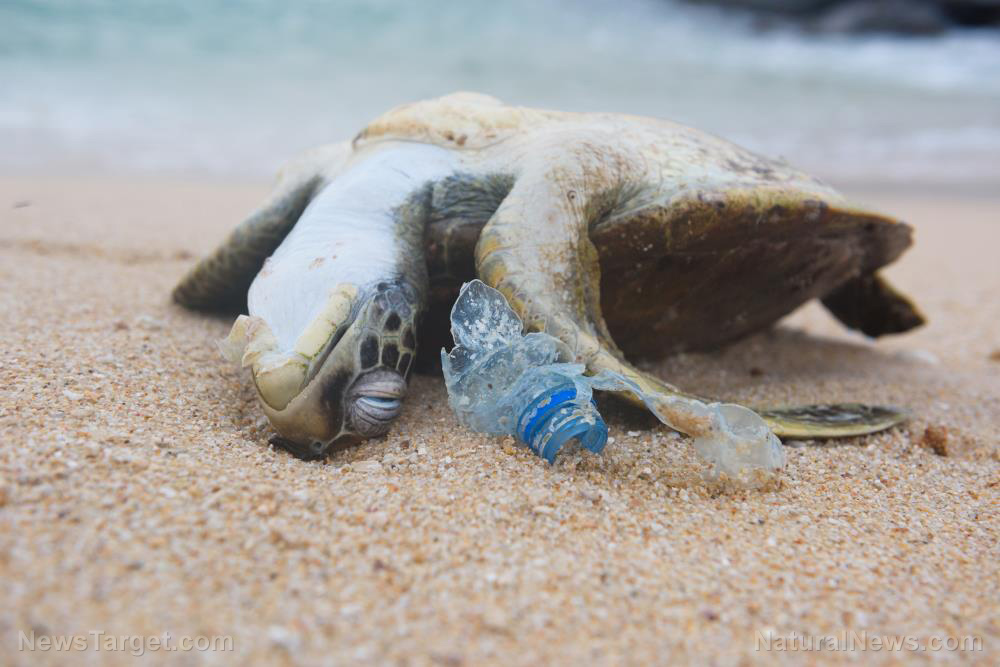

Educational Resources
Learn more about plastic pollution with these resources:

Articles & Reports
Download research articles and reports on ocean plastic pollution.
Plastic Pollution Article (PDF)
Infographics
Visual statistics and charts showing the impact of plastic on oceans.

Videos
Watch educational videos and animations about ocean plastic pollution.
Watch Video on YouTubeNews & Real Incidents (Citable)
- MV X-Press Pearl (Sri Lanka): Major marine pollution disaster; court compensation ruling (AP News, 2025).
- Scientific study on nurdle contamination: peer-reviewed research on spilled plastic pellets and coastal impacts.
Official Reports (Citable)
- UNEP – plastic pollution estimates and global policy action.
- OECD – Global Plastics Outlook projections to 2060.
- The Ocean Cleanup – annual progress updates and removal totals.